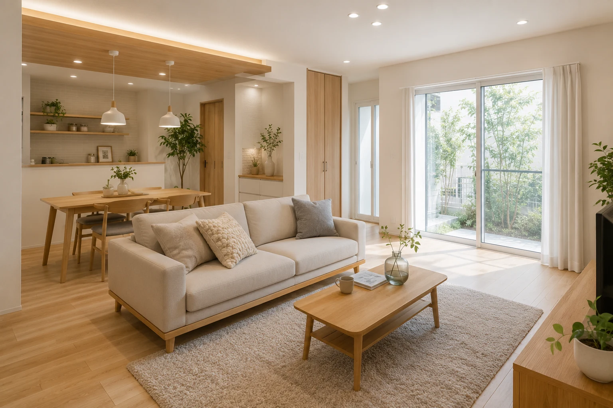
水回り・内装家族で過ごしやすい明るいLDKへ
キッチンまわりの動線や収納を見直し、家族が集まりやすい空間に整えた事例です。
- 費用の目安
- 約280万円
- 工期
- 約3週間
きっかけ収納が足りず、キッチンから家族の様子が見えにくかった。
変わったこと対面キッチンと大容量収納で、片づけやすく会話しやすいLDKへ。
補助金：子育てエコホーム支援事業を活用
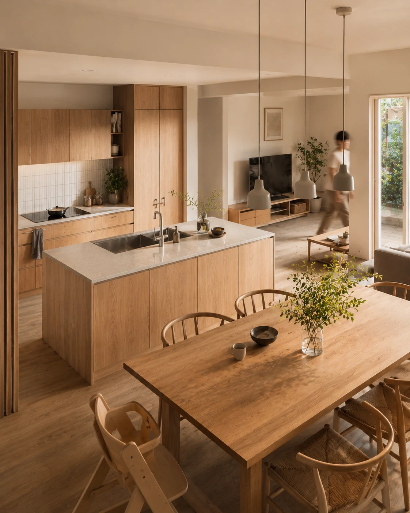
RENOVATE YOUR LIFE
費用・修理の判断・補助金・業者選びまで。リフォーム前に知っておきたい情報を、やさしく整理する住宅リフォーム情報サイトです。
Find Reform
Equipment
気になる場所や設備から、費用・交換時期・注意点を確認できます。
Worries
費用や補助金、業者選びなど、リフォーム前の不安から必要な情報を探せます。
完成後の写真を見ることで、費用だけでは分かりにくい暮らしの変化や工事範囲を想像しやすくします。

水回り・内装キッチンまわりの動線や収納を見直し、家族が集まりやすい空間に整えた事例です。
きっかけ収納が足りず、キッチンから家族の様子が見えにくかった。
変わったこと対面キッチンと大容量収納で、片づけやすく会話しやすいLDKへ。
補助金：子育てエコホーム支援事業を活用
※ 掲載の事例・費用は一例です。実際の費用は住まいの状態や工事範囲によって変わります。

最初に読んでおくと、家族との相談や見積もり前の準備がしやすくなる記事です。
部位ごとの費用感と、費用が変わる主な理由を整理します。
相談前に確認したい業者選びの基準を整理します。
対象になりやすい工事や、確認するときの注意点を整理します。
見積書を見るときに確認したい項目や比較の考え方を整理します。

原因調査の範囲や、契約前に確認したい見積もり項目を整理します。

工事範囲による費用差と、使いやすさを考えるポイントを紹介します。

交換時期の目安と、見積もり前に知っておきたい流れを整理します。

断熱リフォームで確認したい費用と制度の見方をまとめます。

対象になりやすい工事と、申請前に確認したい注意点を紹介します。

相見積もりや契約前に確認したい基準を分かりやすく整理します。
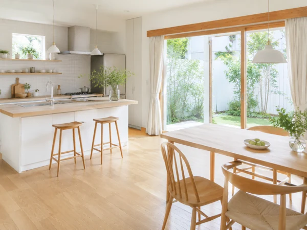
Better Bedroom!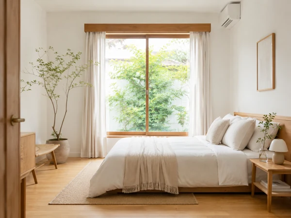
Better Vanity!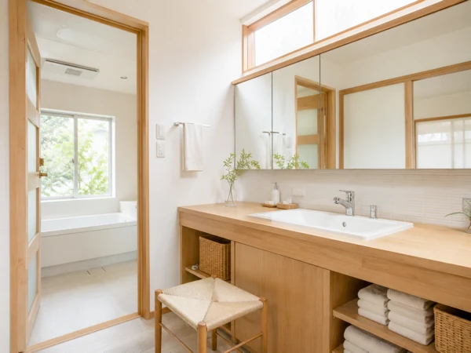
Better Work Space!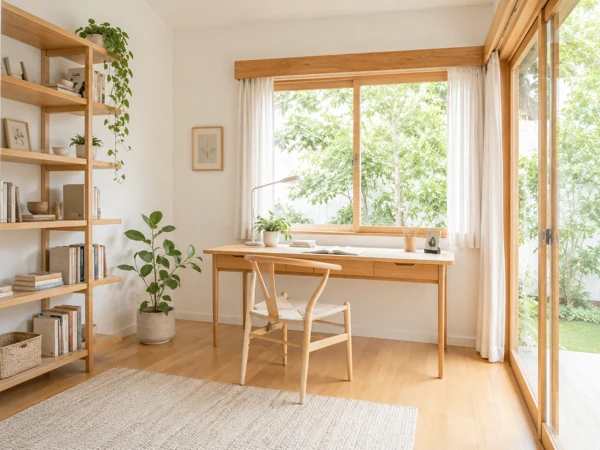
Better Toilet!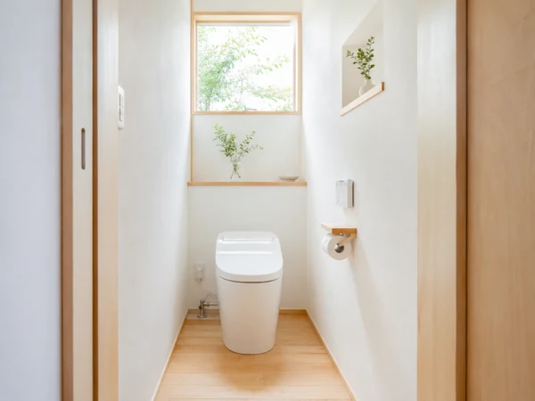
Better Kids Room!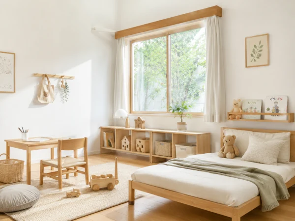
Better Bath!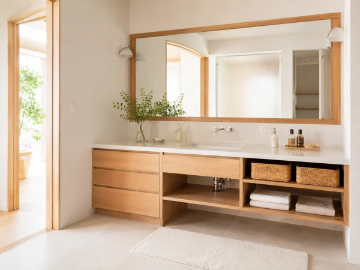
Better Laundry!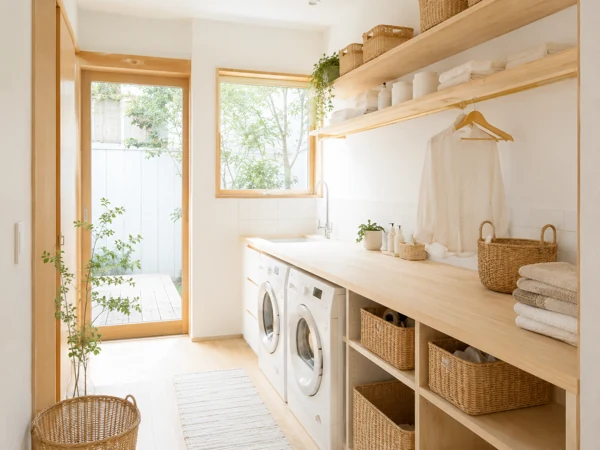
Better Hallway!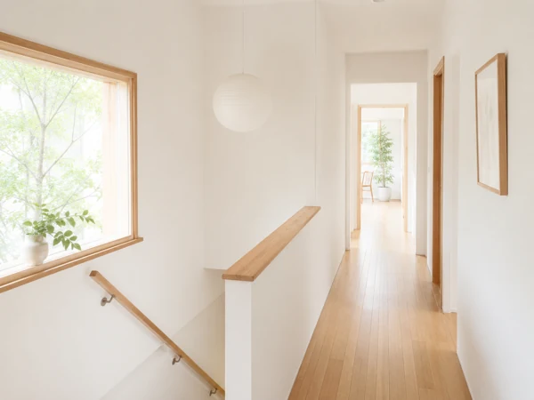